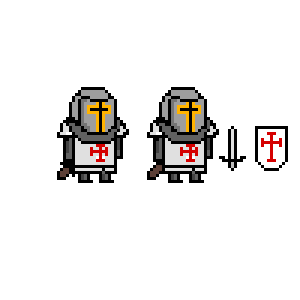
Templier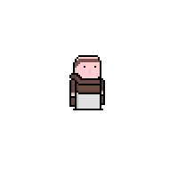
Prêtre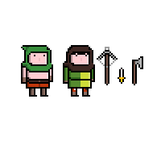
Bandit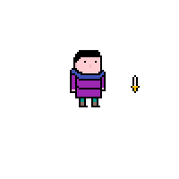
Voleur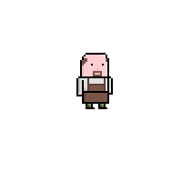
Forgeron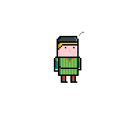
Marchand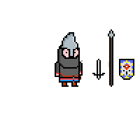
Garde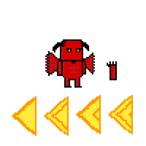
Démon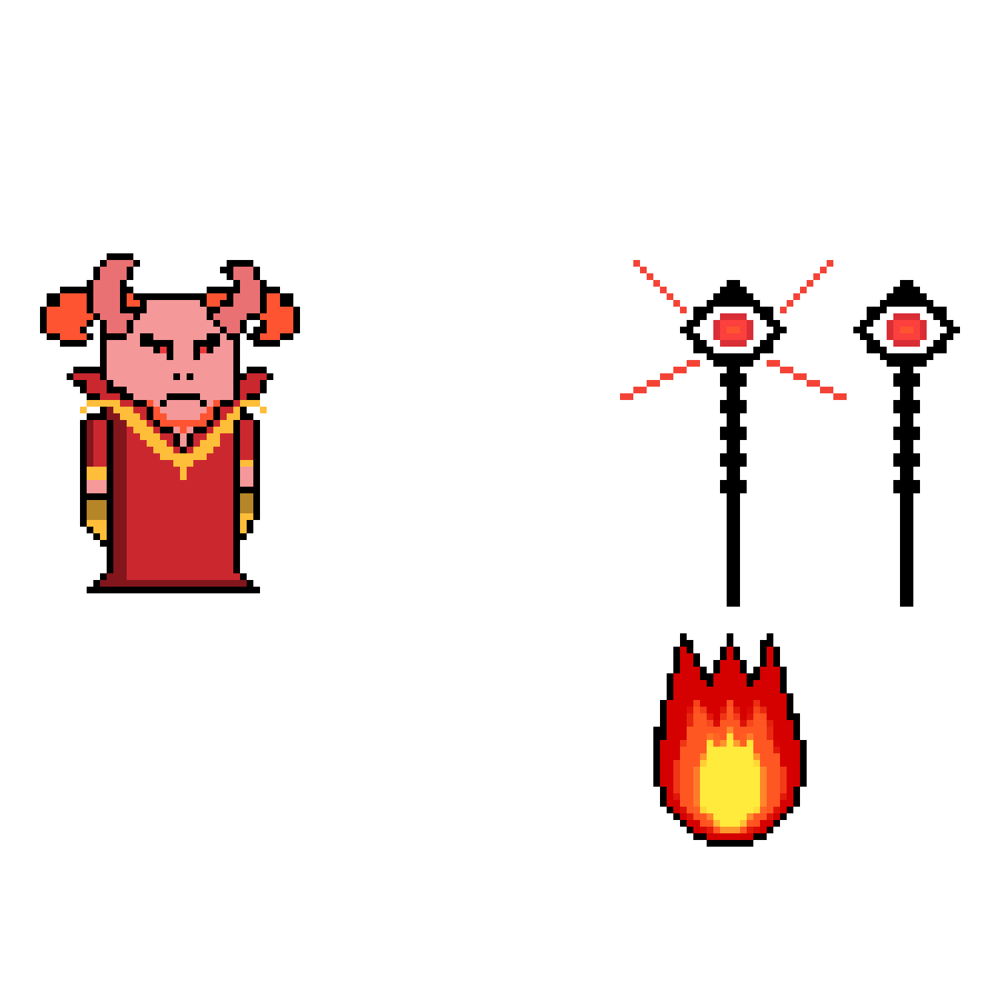
Asmodée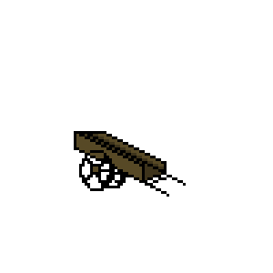
Chariot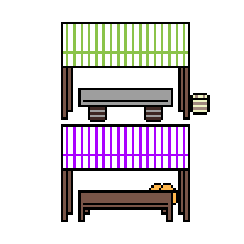
Boutiques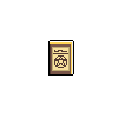
Livre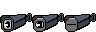
Props de caméra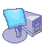
Image du dossier mon ordinateur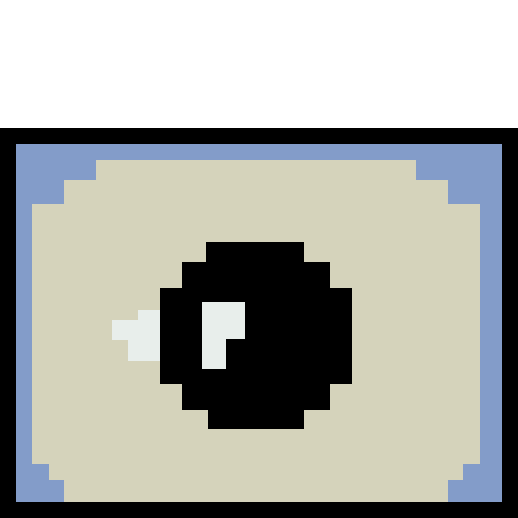
Image d'un élément de décors représentant une créature ressemblant à un ordinateur dont l'écran est un oeil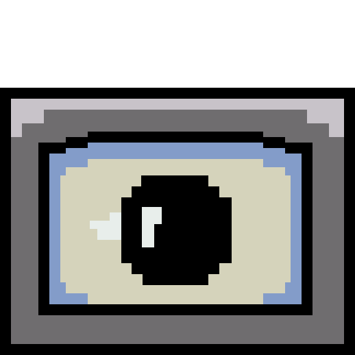
Image d'un élément de décors représentant une créature ressemblant à un ordinateur dont l'écran est un oeil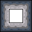
Élements de décor type 1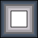
Élements de décor type 2